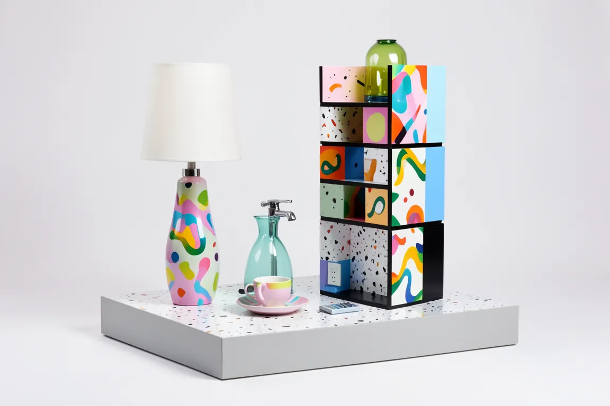

Memphis-gruppens gjenstander: bokhyller, bord, lamper og keramikk bygget av klart laminat, terrazzo og farget glass, i stablede geometriske former med høylytte mønstre.

Kjerneidé
En gjenstand er et leketøy for tankene: den forener billige, klare materialer med symboler og vitser, og den avviser regelen om at god smak er stille.
Designprinsipper
Bygg hvert stykke av 3 til 7 enkle legemer: en kube, en kjegle, en kule, en plate og en stang.
Dekk en flat flate med plastlaminat i et dristig mønster av prikker, striper, krusninger eller spetter.
Bruk 4 eller flere kontrasterende farger på én gjenstand; sett en pastell ved siden av en mettet nyanse.
Gjør formen asymmetrisk: en bokhylle har armer, trinn og skrå hyller.
Kombiner billige og rike materialer: laminat med terrazzo, eller emalje med farget glass.
Sett en synlig skjøt eller et fargeskifte ved hver overgang der to legemer møtes.
Gi hver gjenstand et navn og en vits; bruk den mer som et tegn enn som et verktøy.